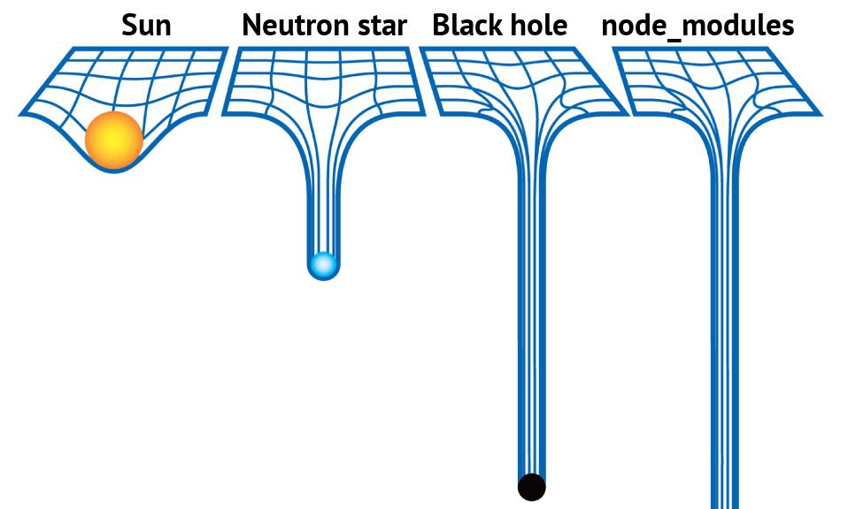

00. Link - The Performance Cost of Server Side Rendered React on Node.js
01. Link - Node.js + OpenCV for Face Recognition
02. Link - Node.js Versions Used in Commercial Projects in 2017
03. Link - A model for reasoning about JavaScript promises
04. Link - The Cost Of JavaScript
05. Link - Taming architecture complexity in V8 — the CodeStubAssembler
06. Link - 77% of 433,000 Sites Use Vulnerable JavaScript Libraries
07. Link - Implementing JavaScript Functors and Monads
08. Link - Øredev 2017 - Kris Jenkins - PureScript: Tomorrow’s JavaScript Today
